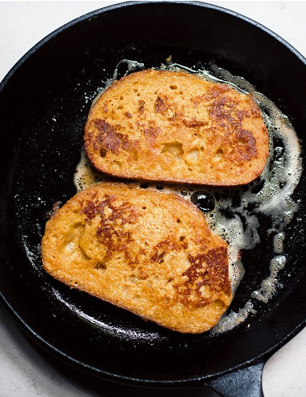

Home
Savory Parmesan French Toast

Description
Delicious and easy French toast that is taken up a notch with the Parmesan cheese.
Ingredients
- 4 eggs
- 1/3 cup grated Parmesan cheese
- 1/4 cup milk
- ground black pepper to taste
- 1 tablespoon butter, plus more as needed
- 4 slices whole wheat bread
Steps
-
Whisk eggs, Parmesan cheese, milk, and black pepper in a shallow bowl until light and fluffy, about 1 minute.
-
Melt butter in a large skillet over medium heat.
-
Dip both sides of each slice of bread in the egg mixture and place in the skillet. Cook until golden brown, 2 to 3 minutes per side. Transfer to a warmed plate and dot with butter to serve.